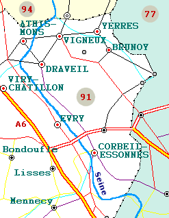
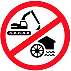

Nos rivières

Le département de l’Essonne compte 4 régions naturelles : Beauce, Brie, Gatinais et Hurepoix.
Les cours d’eau parcourent plus de 400 km en Essonne. Dix rivières principales jalonnent le département et rejoignent la Seine vers le nord-est. Les plans d’eau occupent plus de 100 hectares. Ces milieux sont particulièrement riches en oiseaux aquatiques et poissons.
LA SEINE est la seule rivière navigable du département. Ses principaux affluents en Essonne sont la Bièvre, l’Ecole, l’Essonne, l’Orge, le ruisseau des Hauldres et l’Yerres.
L'ESSONNE prend sa source dans le Loiret et, outre la Velvette, son principal affluent est la Juine qui reçoit les eaux de la Chalouette, de la Louette, de l'Esclimont, du Juineteau, de la Marette...
L'ORGE reçoit les eaux de la Renarde (et de la Misère), de la Remarde (de la Prédécelle et du Rouillon), de la Salmouille , de l’Yvette (de la Mérantaise, du Rhodon et du Rouillon)…
L'YERRES reçoit les eaux de l’Avon, du Beuvron, du Bréau, de la Marsange, du petit ru d'Oly, du Réveillon, de la Visandre et de l'Yvron.
Il y a beaucoup de rivières pour faire tourner les roues des moulins en Essonne !
La Juine… ce petit cours d’eau long de quelques 52 kilomètres qui prend sa source dans le Loiret, vers Autruy, arrose Etampes et se jette dans l’Essonne à Vert-le-Petit. Elle est gérée par le SIARJA, notre partenaire.
La Juine en amont d’Etampes, dite Haute Vallée, quitte le Loiret après le village de Juines et nous allons la suivre des cressonnières de la Villa Paul jusqu’au marais d’Etampes. Si à l’origine elle était dite « de nappe » (nappe de Beauce), il reste aujourd’hui de nombreux biefs qui nous font dire que son lit est « perché ».
Méréville, capitale du cresson, était aussi réputée pour ses nombreux moulins ( Courcelles, Pots, Semainville, Glaires, Pont et Cailles ) !
Prenons la route de la vallée qui longe la rivière du parc du château vers Etampes (RD 491) et la première halte est le moulin de Boigny. En chemin, la ville de Saclas offre une halte verte. Ala fin du XIXème siècle voisinaient trois filatures de laines et plusieurs moulins à farine ( Saint-Denis, Graviers, d’Ahaut, Conforme, Boudard et le moulin de l’Enclos ). Situé entre Juine et Eclimont le village de Saint Cyr la Rivière nous offre deux moulins : Saint-Cyr et Chanteloup.
Le village de Boissy la Rivière est un lieu de passage très ancien où nous pouvons découvrir deux anciens moulins (Noisement et le moulin des Clercs). Puis en contre bas de la route s’étend comme un oasis sauvage : après Boissy-la-Rivière, Ormoy-la-Rivière clôture ce parcours verdoyant au fil de la Juine. Le moulin de la Planche d’Ormoy est devenu un CFA (maison familiale et rurale).
L'Éclimont prend sa source à Abbéville-la-Rivière et rejoint la Juine à Boissy-la-Rivière. Son affluent la Marette (à Arrancourt) le rejoint à hauteur du moulin de la Planche. Sa vallée est célèbre pour son parcours de pêche à la mouche, sa ferme pédagogique, ses truites, ses promenades en sous-bois et ses lamas… Deux moulins avant de rejoindre la Juine : Fontenette (Abbéville) et Moulin Neuf (Boissy).
La Marette de Guillerval dévale sur l’autre versant d’au-dessus de Guillerval à Saclas ; on y constante plus de landes que de boisements mais c’est une nouvelle diversité de paysage qui tranche avec la monotonie du plateau beauceron. Sur la droite en descendant l’ancien moulin de Pontachat (ou Bichereau) qui avait été transformé en filature.
La Chalouette en amont d’Etampes naît à la source Sainte-Apolline et a fait tourner un très ancien à blé (Moulin de Chalou), puis en alimentait six autres (de Moulineux, d’Ezeaux, de Gueurville, de la Roche, des Carneaux et de Chérel) sur la commune de Chalo-Saint-Mars.
La Louette en amont d’Etampes naît à Saint-Hilaire et n’a conservé qu’une trace de l’industrie meunière avant d’entrer dans Etampes : un moulin lui aussi appelé « Moulin de la Planche » déclassé en 1932.

Pour l’origine du nom "Etampes" ... il existe plus de 18 propositions et j’ai choisi « Stampae » de la racine pré-latine « staps » ou « stang paes » : le pays des marais (ou étangs)...
Il y a 2000 ans au temps des Gaulois il n’y avait que forêts (les Carnutes d’un côté, les Senons de l’autre) et de l’eau au milieu... Un petit village ` flanc de côteau avec les marais de Chalou d’un côté et le marais de la Juine de l’autre.
Au temps des Romains le tracé de la « voie romaine » prouve que l’eau a été un obstacle à sa construction : elle arrivait d’Etrechy et partait vers Saclas.
Les guerres fratricides des rois Mérovingiens nous montrent l’importance d’Etampes et nous permettent de mieux comprendre qu’une autre route partait vers Morigny : la voie Brunehaut...
Puis vinrent les invasions : si les barbares, à priori, ont évité Etampes, ce ne fut pas le cas des Vikings ! Ils sont arrivés par l’eau et ont saccagé la ville en 911.
Les remparts et la Porte d’eaux... (seul ouvrage de ce type conservé en France) sont la preuve de l’importance des rivières et du marais !
(extrait de l’introduction de la conférence du président « Nous marchons sur l’eau »).
La commune d’Etampes est traversée par la Juine et par tout un réseau
de cours d'eau forcés constitué à partir de l'an mil environ pour faire
tourner les roues des moulins qui ont fait sa richesse jusqu'au XIXe siècle.
Les eaux
de la Louette et de la Chalouette ont été réunies au niveau des Portereaux pour former ce
qu'on a appelé la « Rivière d'Étampes », qui traverse le centre-ville. Elles y
sont rejointes par celles du Juineteau, artificiellement divisées en plusieurs bras :
La
rivière de l'Arche, La Bécassine, Le Canal communiquant de la Juine au Juineteau,
Le Chariot d’Or, Le ruisseau des Dames, La Filature, La Filière, Le Gallardon, Le
ruisseau de Guillerval, Le ruisseau des Près et La Tortue...
Ils drainent une zone
autrefois marécageuse et aujourd’hui ils irriguent des jardins.
Etampes n’a donc pas
que la Tour de Pise (Eglise Saint Martin) mais aussi les canaux de Venise (quartier Saint
Pierre).
Au XIXème siècle sur l’arrondissement d’Etampes on dénombrait 145 moulins à eau et 18 moulins à vent… dans Etampes intra-muros 30 moulins à eau qui n’étaient pas tous à farine : il y en avait à foulon, à tan, à peau et à papier.
D’après l’état de tous les moulins de la commune par Léon Marquis en 1881 il y a 28 moulins et il en reste 3 en fonctionnement en 1936 du fait de la concurrence des grands moulins.
Sur la Juine : Gérofosse, Bourgneuf, Fontaines.
Sur la Louette : Vaujouan, Tan, Ouche, Chauffour, Peaux, 2 x Branleux, Bonté (nom du dernier propriétaire du moulin "de Saclas").
Sur la Chalouette : Valnay, 2 x Badran, Baildar, Braban, Pirouette, 2 x Trinité, Hospice.
Sur la Rivière d’Etampes : Sablon, 2 x Notre Dame, 2 x Darnatal, Maubelle et 2 x Port.
Le dernier moulin sur la rivière d’Etampes est celui du domaine de Brunehaut mais nous sommes sur la commune de Morigny, célèbre pour les restes de son ancienne abbaye. Sur la Juine au moins quatre moulins ont rythmé la vie de la commune : Moulin Vieux, Moulin neuf, Villemartin et Vieillemaison.
Jusqu’à la fin du XVIIIème siècle, les terres de Jeurre et des alentours n’étaient que marécages ; En 1792, la Jeurre naît du drainage et de l’assèchement des terres ; Un pont aqueduc permet le passage de la Jeurre sous la Juine canalisée.
Après avoir traversé le domaine de Jeurre et croisé la Jeurre nous arrivons sur la commune d’Etrechy au seul moulin sur la Juine qui a su s’adapter à la modernité et résister à la concurrence des grosses minoteries : le Moulin de Pierre-Brou. Nous entrons dans le Gâtinais à Auvers-Saint-Georges où les moulins de Vaux et de Chagrenon (en flamme durant la dernière guerre) ont jusqu’à la fin du XIXème siècle, transformé la production céréalière locale, avant de devenir une usine de production de billes et de chaînes (usine de Vaux).
Sur la commune de Lardy quatre anciens moulins sont repérables : moulin de la Gayère (disparu), moulin des Scellés (ou Henri IV, domaine des Pastoureaux) , moulin Richard, moulin de Sandreville et moulin Saulnier. A Janville il y avait un port lorsque la Juine était navigable mais aussi deux moulins : les moulins Goujon et Jauzon.
Les seigneurs de Bouray-sur-Juine habitaient le château du Mesnil-Voisin et sa principale dépendance était le grand moulin de Bouray (ou Lecoeur) qu’un incendie a ravagé en décembre 2009. A Itteville on se rapproche de l’Essonne et sur la Juine il ne reste qu’un moulin désaffecté : le moulin de la Brière, propriété de la famille de Mortemart. L’avant dernière étape se situe à Saint-Vrain riche d’au moins trois moulins : Brateau, Petit Moulin et le moulin de l’Epine où est née la première manufacture hydraulique de France.
C’est à Vert-le-Petit que la Juine arrive au terme de son voyage et conflue avec l’Essonne au milieu des marais, paradis des pêcheurs. Au XIXème siècle deux petits moulins à blé fonctionnaient encore (Gommier et Bouchet) proches de l’ancienne manufacture royale de cuivre.
(Source : « La Juine et ses moulins, la rivière et l’homme » - Saint-Vrain et son histoire dont il nous reste quelques exemplaires et la publication « Etréchy : l’eau de toutes façons » de l’Association Etréchy et son Passé), Le patrimoine des Communes de l’Essonne, Editions Flohic, documents SIARJA er Archives Départementales).
L’Orge, de 2 km plus longue que la Juine, prend sa source dans les Yvelines, au sud du massif forestier de Rambouillet, et entre dans l’Essonne pour arroser Dourdan et se jette dans la Seine en deux bras l'un à Viry-Châtillon, l'autre à Athis-Mons. Son bassin supérieur, en amont d’Arpajon, comporte 45 sites d’ouvrages hydrauliques, dont 36 moulins. Elle traverse 10 communes et reçoit deux affluents : sur la rive droite la Renarde (confluence à Breuillet) et sur la rive gauche : la Rémarde (confluence à Arpajon).
À Dourdan une partie du tracé du cours d'eau a été détourné par les habitants pour remplir les douves du château de la ville et permettre l'établissement de plusieurs moulins qui n’existent plus aujourd’hui : moulin de Grillon, moulin du Potelet, moulin du Roy, moulin Choiseleur et moulin Grouteau). L’autre partie reste en fond de vallée et reçoit le ruisseau de l'Etang de la Muette qui prend sa source à Corbreuse. A Roinville, les anciens moulins qui ont survécu accueillent des résidences privées… Il y en avait peut-être un à Chateaupers ? (petit château dont le parc est traversé par l’Orge).
La rivière entre à Sermaise au lieu-dit "Moulin Rocher" ; quelques fossés, boëlles et morts-rus (ou bras-morts) se détachent du cours principal de la rivière dont le lit naturel a été déplacé en maints endroits lors de l'installation des anciens moulins de Bellenger, de la Mercerie et de la Rachée. (aujourd'hui usine). Sur Saint Chéron il y avait certainement un moulin dépendant du château de Baville mais au Moyen-Age c’est à Breux-Jouy que les moulins se sont le plus multipliés (voir aussi la Renarde).
La médiathèque de Breuillet est installée au moulin des Muses, d’autres moulins subsistent encore, mais ne sont plus en activité. (dont le moulin Guilbert).
Avant d’arriver à Arpajon il nous reste à traverser Saint-Yon et le moulin de Dampierre, Bruyères-le-Châtel, Égly et Ollainville (voir aussi Rémarde).
La Renarde
La Renarde est le premier affluent de la rive droite de l’Orge. En incluant Boissy le sec et le ru de la Misère puis la vallée sèche de Venant à Richarville elle parcourt environ 16 km. Elle apparait à Villeconin et se jette dans L'Orge au niveau de de Breuillet ; son confluent avec l’Orge est situé très exactement au moulin de Dampierre, dans un élargissement autrefois marécageux et qui est devenu aujourd’hui « Port Sud ».
Le débit de la rivière Renarde sans être très important était cependant suffisant pour actionner des moulins répartis le long de la rivière et qui broyaient le grain récolté localement, essentiellement le blé, à l'exception d'un moulin à tan dont il ne reste rien et qui était situé au niveau de Feugères. Ils ont tous perdu leur fonction… En remontant la rivière, on trouve les moulins de Dampierre, de Breux, de la Briche, de l'Ecurie (ces deux moulins situés sur le territoire de Saint Sulpice de Favières), et enfin les moulins de Souzy.
A Souzy-la-Briche, la Renarde alimentée par la résurgence des eaux de nappe, le débit est multiplié par 5 entre l’entrée et la sortie de la commune et a permis de faire tourner plusieurs moulins dont le Moulin Neuf.
La Rémarde
D'une longueur de 36 km, la Rémarde prend source près de Sonchamp dans les Yvelines et se jette dans l'Orge à Saint-Germain-lès-Arpajon. Tout au long de son cours, jusqu'à la fin du XVIIIe siècle, plus de trente moulins à eau faisaient vivre les habitants des deux rives : les céréales se transformaient en farine, l'écorce de chêne en tan (poudre utilisée dans la tannerie pour la préparation des cuirs). Quelques-uns de ces moulins subsistent encore.
Elle entre en Essonne au moulin de Morsang et traverse Saint-Cyr-sous-Dourdan (Moulins de Bandeville, de Levimpont) et reçoit les eaux de la Prédécelle au Val-Saint-Germain (moulin de Villeneuve) qui alimente la belle pièce d'eau du Château du Marais. Plus à l'est, non loin du château du Marais, le moulin de Granville est aujourd'hui une propriété privée. Viennent ensuite le moulin du château, le moulin de Crèvecoeur, le moulin de Pihale dont l’écluse est toujours en place, quatre moulins à hauteur de Bruyères-le-Châtel et Breuillet (moulin Morant, moulin Neuf, moulin de Tournoye et moulin de Guisseray). La Rémarde reçoit au niveau de Breuillet la Charmoise qui prend sa source à Janvry et traverse enfin les communes d’Ollainville (moulin de Trévoix, Villelouvette, Neuf et moulin de la Bête), d’Arpajon et Saint-Germain-lès-Arpajon.
Arpajon
Le dernier moulin de l’Orge supérieure est le moulin de Cerpied (ou Serrepied) ; il était encore en activité en 1871, mais en 1892 il est consacré à la fabrication de chaussures. En 1989 quand il fut démoli, il n’était plus occupé. L’emplacement est devenu un espace jeunesse, une installation sportive. Arpajon est traversé par un important réseau de cours d'eau : un document daté de 1265 atteste de la présence de plusieurs moulins et à la fin du XIX °, dans le fond de vallée, les meuniers installés depuis l’Ancien Régime modifient le tracé de l’Orge pour optimiser leur activité : rectification du cours d’eau par l’élimination des méandres, division à deux reprises en bras différents -dits boëlles- qui confluent ensuite, formant des petites îles. Les deux rivières Rémarde et Orge évoluent en parallèle. La Boëlle Morand (un bras de dérivation alimentant autrefois le moulin Morand) complète l’ensemble... Aujourd’hui tous disparus (Le dernier moulin disparaît en 1911) il ne reste que peu de traces du moulin de la Boisselle, des moulins de l’hôtel de Ville…
Sur la figure jointe les deux bras de l’Orge se repèrent grâce au maintien de la ripisylve et on observe, indiqués par un trait plus fin, les tronçons de l’Orge qui ne sont plus apparents.
Sur la commune de Saint-Germain-lès-Arpajon l’Orge se joint à la Rémarde (moulin de Baraillon, moulins Falaise, Francherelle et de la Boisselle) et reçoit la boëlle du Fossé de la Grande Vidange avant le moulin de Fourcon.
A la sortie de Saint Germain le paysage change, l’Orge poursuit son cours sur le territoire de Leuville-sur-Orge par le moulin d'Aulnay (propriété privée). Le début de la vallée basse est d’abord vécue par les habitants comme une succession de plans d’eau, publics et privés, reliés à l’aval par une coulée verte. Les communes ont voté des aménagements paysagers de plan d’eau dans les trous de gravière.
Elle traverse 14 communes et reçoit ses deux principaux affluents sur la rive gauche : la Sallemouille (confluence à Longpont-sur-Orge) et l'Yvette (confluence à Savigny-sur-Orge). A hauteur du premier bassin on peut citer le moulin du Petit Paris puis l’Orge marque pour partie la frontière ouest de Brétigny-sur-Orge en parcourant un peu plus de trois kilomètres du sud au nord entre les lieux-dits le Moulin d’Aulnay et Guipereux. Le lac de Carouge est aussi alimenté par un ruisseau, le Blutin, qui coule depuis le centre-ville. Depuis le Moyen-âge, (Moulin Neuf ou Moulin du Pré) le Moulin du Carouge sert à moudre les céréales récoltées par les Brétignolais. Aujourd’hui tout un système de réglementation, d’entretien et d’utilisation du cours d’eau a été mis en place pour le protéger. A hauteur de la confluence avec la Salmouille et en parallèle du ruisseau La Boële se situe le moulin de Basset : nous traversons Longpont-sur-Orge qui possédait au moins trois moulins à eau banaux dont ce dernier est le moulin de Grouteau aujourd’hui disparu. A Saint-Michel-sur-Orge la rivière reçoit la Boële du moulin Souchard et le ru de Fleury puis traverse Sainte-Geneviève-des-Bois – Orge, Villiers, Morsang, Villemoisson et Epinay. A Savigny-sur-Orge la rivière reçoit lYvette et se sépare en deux : à droite la Morte Rivière qui rejoint la Seine à Viry-Chatillon et à gauche l’Orge, en partie souterraine, qui traverse Juvisy et rejoint la Seine à Athis-Mons. Le surnom de l’Orge était la Vallée des moulins, si nombreux au XIXe siècle, et la plupart ont disparu à cause de la flambée démographique qui a envahi le territoire du bassin inférieur.
La Salmouille
Aussi orthographiée Sallemouille, elle prend sa source à Gometz-la-Ville, et se jette dans l'Orge à Brétigny-sur-Orge. Elle traverse Gometz-le-Châtel et reçois le Vaularon, le ruisseau d’Angoulême et la Frileuse ; elle serpente sur 17 km et arrose Janvry, Saint-Jean-de-Beauregard, Marcoussis, Linas, Longpont-sur-Orge et Brétigny-sur-Orge. C’est un ruisseau « parsemé d’étangs et de mares » qui à Marcoussis irriguait les douves de l’ancien château de Montagu.
C’est à Linas que l’on retrouve la trace d’au moins 3 moulins : moulin de Cholet, moulin de l’Etang et moulin Guillerville. Ce dernier dépendait du château de Bellejame. Primitivement moulin à farine, l’établissement est transformé en fabrique de cartons. Il fonctionne jusqu’à la fin du 19°. Le bief qui l’alimentait ainsi que l’étang qui servait de réservoir au moulin ont subsisté. Le bâtiment abritant la roue a disparu. Seuls le logis du meunier et les dépendances ont été conservés.
L'Yvette
L’Yvette prend sa source au lieu-dit Yvette, commune de Lévis-Saint-Nom (78) puis coule dans la vallée de Chevreuse et entre en Essonne à Gif-sur-Yvette pour retrouver l’Orge à Savigny. Elle traverse 12 communes et reçoit onze affluents dont nous retiendrons les plus importants (1/ rive gauche : Le Rhodon et la Mérantaise ; 2/ rive droite : Le Vaularon). Elle alimentait vingt-quatre moulins en 1750, selon la carte de Cassini, quarante si l’on compte ceux de ses affluents.
A Gif le premier moulin est celui de Courcelle et jusqu’au 20° l’activité du village reste centrée sur les vallées de l’Yvette et de la Mérantaise (tanneries et moulins à blé)… Son histoire est étayée de nombreuses querelles entre meuniers (Moulin de l’abbaye, moulin Aubert, ou moulin de La Tuilerie, qui a appartenu au duc et à la duchesse de Windsor) et ces moulins sont devenus des propriétés privées. A Villiers-le-Bâcle coulent la Mérantaise et la Segraye ; le Moulin Neuf (mentionné en 1403), route de Gif, tournait en aval de celui des Vasseaux. Le premier nommé était alimenté par un « grenier d’eau », le second est devenu un haras à la fin du 19° siècle.
A Bures-sur-Yvette (qui reçoit le Vaularon) le moulin Guibert est un témoin vivant de l’ancienne activité de meunerie qui faisait la richesse du bassin depuis le 14 ° siècle. Il est donc le seul parmi les 18 moulins qui y fonctionnaient à la veille de la Révolution à encore utiliser l’énergie hydraulique. Puis la rivière traverse le domaine de la ferme de Launay qui était équipé d’un moulin pur y vivre en autarcie et qui est devenu le Centre universitaire d’Orsay.
La rivière traverse ensuite Palaiseau et Villebon d’où les moulins de La Bretèche, de la Planche de Grimperet (on y foulait les draps) et Bergeotte ont disparus, tout comme les moulins des sieurs Lanoy et Oziard.
La construction du premier moulin à eau sur l’Yvette remonte certainement au 11° siècle et il pourrait être celui des chartreux de Saulx dont le moulin deviendra moulin banal puis sera transformé en une maison bourgeoise. En 2016 le moulin Saint-Martin et celui de Gravigny étant depuis longtemps de l'histoire ancienne, le dernier moulin de Longjumeau encore en activité, le Moulin de Saint-Eloi (ou moulin de Chilly), était ravagé par un incendie.
Le dernier moulin recensé sur l’Yvette est le moulin de Petit Vaux près du pont entre Epinay et Savigny. Ces deux communes sont arrosées aussi par l’Orge… Le moulin Joppelin est proche de la confluence (situé sur l’Orge sur la rive de Viry mais dépendant du domaine du château de Savigny).
C’est le SIAHVY qui exerce tous les travaux, études et démarches relevant de sa compétence « Rivière », comprenant notamment la renaturation des berges.
Ce cours d'eau tire peut-être son nom du latin biber, bièvre, désignant jadis le castor, mais beber signifie aussi : de couleur brune, comme ses eaux… La Bièvre (36 km) prend source à Guyancourt (Yvelines) et se jette dans le collecteur principal des égouts de Paris. C’est un affluent directe de la Seine… Son parcours dans le département de l’Essonne est, pour l'essentiel, à l'air libre. Elle entre au niveau de l’ancien moulin de Vauboyen, où se rejoignent deux bras distincts en amont et la quitte à l’entrée d’Antony. En 1714 on dénombre sur la Bièvre 24 moulins dont 12 sont situés en amont d’Antony. Chaque commune construit un ou plusieurs moulins à farine.
Le Moulin de Vauboyen (autrefois en censive de Montéclin qui appartient à Saint Germain des Prés) est un moulin ferme disposé autour d’une cour pavée dans laquelle on pénètre par une porte charretière. Une dérivation de la Bièvre et d’un ruisseau alimente sa roue. Les eaux usées rejoignent ensuite la Bièvre par l’étroite morte rivière, le moulin est en piètre état lorsque Pierre de Tartas fait d’important travaux afin d’y installer son centre culturel et artistique. Des œuvres sont installées dans le jardin et d’autres exposées à l’intérieur du moulin…
Après Vauboyen et en contrebas du château des Roches, la rivière est à nouveau divisée, en deux bras : un bras artificiel surélevé qui alimente le parc du château des Roches puis un bassin dans le parc du château de la Martinière qui actionnait un moulin (aujourd’hui restauré) en contrebas du pont de la rue du Petit Bièvre. Les deux bras se rejoignent à proximité de la gare.
Sur sa rive gauche la Bièvre reçoit un affluent la Sygrie : le centre-ville de Bièvres s’est développé un peu en amont de la confluence de ces deux cours d’eau.
A la limite de la commune d'Igny près du bassin des Damoiseaux (aménagé par le SIAVB* pour limiter les inondations) le bras surélevé actionnait la roue du moulin de Marienthal, actuellement bâtisse délabrée, (impasse du moulin d’Igny) et rejoignait le bras naturel. Le bras vif destiné à alimenter des moulins à Verrières est longé par le chemin piétonnier GR 11 qui forme la limite avec la commune de Verrières.
La « vallée comestible » vaut le détour : c’est un 'espace qui rassemble des bénévoles ayant pour but de valoriser le site de la Bièvre et de préserver l'environnement par l'arboriculture, l'agroforesterie et la permaculture.
La partie sud de la commune est parcourue par un affluent de la Bièvre, le ru de Vauhallan alimenté par les étangs de Saclay. La confluence est située sur le territoire de Verrières.
Le village de Verrières et ses écarts sont en place dès le XIII° : les hameaux d’Amblainvilliers, qui comportent un château fort, et de Vaupéreux, trois moulins et deux tuileries.
Deux bras parcourent Verrières :
1/ au nord, un bras artificiel surélevé alimentait, d'amont en aval, le moulin d'Amblainvilliers, le moulin de Grais et le moulin de Mignaux. (Ce bras a été déplacé le long de la route construite dans les années 1960 et recouvert au bord de cet axe routier et ce tronçon a été remis au jour en 2000 par le SIAVB*).
2/ au sud, son cours naturel qui passe sous le pont Monseigneur, à la limite d'Igny, traverse le golf, puis pénètre dans le parc du château de Vilgénis dans la commune de Massy. Ce cours est rejoint sur sa rive droite par le ruisseau de Vauhallan.
Les deux bras se rejoignent au niveau de la rue du Pré et le bras unique s'éloigne et longe le square de la Bièvre à Massy.
Le moulin de Grais est un ancien moulin banal. En 1859 moulin et logis sont sous le même toit. Le mécanisme, mu par la roue de type « en dessus », est au sous-sol, tandis que les meules sont au rez-de-chaussée et le crible moteur, le blutoir et la chambre de farine à l’étage. Après avoir cessé de moudre en 1914 il a servi pendant quelques temps à fabriquer du « chrome français », il est aujourd’hui transformé en maison de quartier.
A Massy parmi d’autres anciens moulins disparus, le moulin de Berny est un immeuble d’habitation bien restauré et mis en valeur.
La rivière quitte le territoire juste après la traversée souterraine de la voie à grande vitesse pour ressortir sur le territoire d’Antony dans le parc du Breuil et de la Bièvre. Au moulin-haras de Vauptain elle a quitté le département de l’Essonne.
Sources : Sites Wikipedia et SIAVB (Syndicat Intercommunal pour l'Assainissement de la Vallée de la Bièvre) , Mairies de Bièvres et d’Igny…
La rivière prend sa source en Seine-et-Marne et se jette dans la Seine à Villeneuve-Saint-Georges dans le Val-de-Marne. Elle entre en Essonne à Varennes-Jarcy et la quitte à Crosne. Le rôle économique de la rivière, jalonnée jadis de nombreux moulins (à farine), est oublié aujourd’hui… Ses deux principaux affluents dans notre département sont le Réveillon (qui sert de frontière entre les communes de Brunoy et de Yerres) et le ru d'Oly.
Les premiers moulins rencontrés sont ceux de Jarcy et de Varennes et ce dernier, transformé en maison d’habitation, possède toujours sa roue à pales « immobile à jamais ». Situé entre Quincy-Sous-Sénart, en amont, et Épinay-sous-Sénart, en aval, Boussy-Saint-Antoine est au centre du Val d'Yerres et possède le Moulin Neuf qui est le résultat de la transformation d’un grand moulin mécanisé en 1844. Bien plus ancien le Moulin de Rochopt (construit vers 1224) a été démoli en 1970 dans le but d’une opération d’urbanisation, seuls des vestiges de fondations sont encore visibles. Aujourd’hui un barrage occupe la place de l’ancien moulin. En aval à Epinay on retrouve les traces d’un ancien moulin à huile qui au 18° a abrité la machinerie principale actionnant les eaux du château de Brunoy. Le moulin du château, lui, fonctionne avec des énergies mixtes à partir de 1834 et en 1970 les propriétaires arrêtent l’exploitation et font transformer le moulin en appartements par l’architecte Bernard Savary. Tout le mécanisme est conservé et entretenu.
La ville d’Yerres est célèbre par sa propriété Caillebotte et Montgeron par son Moulin de Senlis. La ville de Montgeron en est propriétaire depuis avril 2018 et un projet de rénovation respectant l’histoire de ce site est actuellement en cours. . La première mention selon laquelle le fief de Senlis relève pour partie seulement de la seigneurie de Montgeron date de 1669 mais en 1470 il était déjà fait état d’un moulin à eau à proximité d’un gué sur l’Yerres. Le plateau de Brie, grenier de Paris a favorisé le développement de l’activité de meunerie le long de l’Yerres. Dès le 13 ° siècle le cours d’eau a servi au transport des grains jusqu’à son confluent avec la Seine. Enfin deux moulins à eau sont signalés à Crosne : le moulin de la Seigneurie et le moulin Pampelune. Les deux moulins ont notamment servi de fabriques d’armement durant la 1ère Guerre Mondiale, puis comme blanchisserie et usine de traitement de chiffon.
La rivière prend sa source non loin du Vaudoué en Seine-et-Marne (altitude 62m). Elle se jette dans la Seine à Saint-Fargeau-Ponthierry de nouveau en Seine-et-Marne (altitude 29m) après un parcours de 27 km ((dénivelé moyen 0.12% source SIARE). Elle entre en Essonne à Oncy-sur-Ecole et la quitte après Soisy-sur-Ecole (incursion d’environ 12 km sur 6 communes). La rivière et ses berges restent largement en domaine privé : elle n’est alors visible qu’aux points de franchissement.
Primitivement la rivière L’Escole passait dans le fond de la vallée. Son cours s’est vu relevé dès le XIe siècle par des moines du prieuré de Saint Laurent, situé sur la rive gauche actuelle de la rivière près de la zone d’activité actuelle du Chesney.
Le fond de la rivière est « glaisé » par leurs soins pour éviter les infiltrations et son emplacement est celui visible de nos jours. (Probable période de construction des premiers moulins sur l’Ecole dont celui appelé plus tard « De la Maîtrise » qui justifie ce premier détournement de la rivière, d’autres seront réalisés en aval, afin d’alimenter les moulins par un lit artificiel éloigné parfois jusqu’à 100 mètres de son cours initial).
De nombreuses sources souterraines continuent à alimenter ce petit cours d'eau jusqu'à Milly. Sur son haut cours, l’Ecole est bordée d’anciens prés humides et de marais comme celui d’ Oncy-sur-Ecole… Ces zones humides, tourbeuses, fonctionnent comme des éponges et régularisent le cours de la rivière, absorbant les fortes pluies.
Il n’est pas impossible qu’un moulin à foulon ait existé à Oncy (peut-être celui de la Madeleine (aujourd’hui lavoir + vannage du pont)) mais les moulins « à blé » n’apparaissent vraiment qu’à partir de Milly-la-Forêt quand le débit parait suffisant.
La majorité des moulins sont encore présents. Sur les 23 recensés sur une carte de Cassini datant de 1745, il en reste 17 qui font partie du domaine privé. Aujourd’hui ils ont perdu leur fonction originelle : les moulins sont reconvertis en maison d’habitation à l’exception du moulin de Dannemois qui dispose d’une vocation touristique (restaurant, musée) et d’un des moulins de Soisy qui abrite la Verrerie d'Art. A part eux, leur découverte, même depuis l’espace public, n’est pas toujours possible.
Commençons notre parcours à Milly-la-Forêt : Le château féodal est édifié dès le XI° siècle par les premiers barons de Milly d’origine normande. Les murs actuels, à part certaines parties du XIII°, datent de la reconstruction effectuée vers 1475 par l’amiral de Graville. La forteresse contrôle le passage de la rivière Ecole, enjambée par le pont de la Corne. En amont l’abreuvoir à fond pavé, dans lequel se mire le château, assume un triple rôle : défensif en tant que douve, domestique en tant qu’abreuvoir et dynamique en tant que retenue d’eau. Jusqu’au XX° le débit ainsi renforcé fait tourner en aval une série de moulins sur le cours de la rivière.
Le Moulin du Coudret (ou Coudray) a sa première mention en 1507 et en 1658 il est dénommé « Moulin Premier de la rivière Ecole ». De nombreuses familles s’y succèdent jusqu’à la famille Bouchet qui créé une cressonnière. Il a plus tard appartenu dans les années 1950 à Christian Dior qui y recevait Jean Cocteau, Jean Marais et Françoise Sagan et est encore nommé Moulin Dior par de nombreux Millacois.
Un peu plus en aval une première mention (1390) d’un moulin Cochet qui deviendra moulin de la Grande Roue (1615), puis le moulin Jeuffroy et enfin le Moulin Rompu dont le seuil sera détruit suite à un procès gagné par les propriétaires du moulin en amont (Coudret) et de celui en aval (Maîtrise). Les deux ont appartenu au couvent Saint Victor de Paris puis avant à Louis Malet de Graville Seigneur de Milly en 1497.
Puis existe encore, à environ 200 m, le Moulin de la Maîtrise, anciennement moulin Bretaud, qui appartenait à ce même amiral de Graville qui le reconstruit en 1485 et en 1495 : il crée une fondation perpétuelle d’une haute messe devant être chantée tous les jours pour le salut du Roi, de la Reine et de la famille du fondateur par la Maitrise de chants à Notre Dame de Milly. C’est donc à cette époque que le moulin prend le nom « De la Maîtrise » (voir renvoi). Ce moulin de la Maîtrise possédait une paire de meules et en 1856 possédait encore un four à pain. L’exploitation cesse vers 1890, reprendra pendant la Première Grande Guerre de 1914 et là aussi on peut noter une création de cressonnières dans les années 1960. Il n’est pas visible de la voie mais a été très bien restauré (domaine privé)…
Dans les textes on trouve aussi avant Moigny-sur-Ecole cités un autre Moulin des Noues puis le Moulin de Gauffou (Gauffin). Ces deux moulins ne sont pas sur la rivière ; le premier était sur le ruisseau Saint Roch, détruit depuis longtemps et remplacé par des cressonnières. Et le second est alimenté en eau par un canal artificiel qui amène les eaux de 3 sources… en 1836 Etienne Audas y emploie 3 garçons meuniers… En 1878 il est écrit que ce moulin existait depuis 3 siècles et en 1913 il y avait encore un meunier !
Le moulin Gauffin (ou Gaufin) est le seul situé sur la commune. Il a été construit au 17ème siècle et est alimenté par 3 sources : celle de Saint-Denis, celle de la laiterie (actuel n°7 rue du Moulin) et celle de Fort-Château. Sa lucarne offre encore aux visiteurs la poulie permettant de hisser les sacs de grain au grenier et, petite singularité, sa roue était une roue “à augets”, c’est-à-dire qu’elle était actionnée par-dessus.
Les territoires de Moigny et de Courances sont alimentés par de nombreuses sources qui affleurent, et il existe encore de nombreux puits. La rivière contribue à la culture du cresson et les cressonnières sont nombreuses.
Le hameau primitif de Moigny-sur-Ecole se tenait près de ces sources et de la fontaine Saint Denis. Les sources les plus connues sont celles du Moulin du Ruisseau aujourd’hui disparu (cressonnières).
Le moulin du Ruisseau (ou « Moyen ») est cité plusieurs fois du XIII° au XVIII° siècle. Après le Marquis de Nicolay il appartient au baron Haber puis à la famille de Ganay. En 1881 Clément Buisson y est meunier et pisciculteur… 1896 le dernier meunier transforme le moulin en habitation.
En aval, au bout du parc de Courances, existait un moulin royal : le moulin Grena (ou Grenat ou du Roy). Son nom vient du celtique Grannus dieu des sources ; incendié en 1371 il est reconstruit en 1372, brûlé par les anglais en 1422 mais aussitôt reconstruit… Jeanne d’Arc y aurait dormi en se cachant des Anglais… de nouveau détruit il est reconstruit en 1481, sous Louis XI… C’est un remarquable moulin fortifié construit sur un gué, donc perpendiculaire à la rivière. En 1900 il est à eau et à vapeur… et il tourna jusqu’en 1950 (Vieux Moulin) : sa roue hydraulique permettait d’écraser 20 000 quintaux par an.
Le moulin du village suit : en 1460 appelé « moulin Neuf » il devient « Grand Moulin de Courances » puis moulin Choiseau. Il est cité en 1533 puis en 1610 comme moulin à farine, remis en état en 1766 et converti en scierie vers 1880.
D’autres moulins existaient tous les 500 mètres mais ils ont été presque tous détruits pendant la guerre de 100 ans. Le moulin Bardou (ou Bardon) a été reconstruit à l’emplacement du moulin Pinon (à foulon) ; on retrouve encore cités le moulin des Brissets, le moulin des Mardelas, le moulin de l’Etang et le moulin Acoisel.
Quand l’Ecole entre sur le territoire de Dannemois sa largeur était de 5.60m, sa profondeur de 6.10m et sa pente de 1 % pour un débit 0.5 m3/s. Dans l’histoire, Robert du Plessis a partagé Dannemois en deux grands domaines pour chacune de ses filles : le domaine de la Louvetière et le domaine du Châtelet. Chaque domaine avait son moulin ; le premier avait son moulin dit « l’Ancien » (plus connu sous le nom de « moulin de Claude François ») et le second le moulin d’Estouches (à huile en 1536 puis à bled en 1793 pour s’arrêter en l’an XIII).
Le premier date de 1385 et fut restauré en 1880 (la roue, privée d’aubes est encore visible). En 1936 le comte de Ganay le vend à Louis Minot qui l’exploite pour son compte (farine et électricité) ; en 1943 il est racheté par un pharmacien de Paris et devient maison d’habitation puis demeure de Claude François en 1963. C’est aujourd’hui un établissement hôtelier qui reçoit le public dans le culte de l’artiste disparu…
Nous arrivons à Soisy-sur-Ecole : Le domaine était constitué de fermes et de moulins : trois vont attirer notre attention : le moulin Neuf de la seigneurie du Grand Limery (ferme) à partir de 1385, le moulin du Réau (ou des Réaux) et le moulin des Noues. Le moulin des Réaux tournait encore en 1926 et fournissait les boulangers de Paris (à cheval sur la rivière il a brûlé dans les années 1980, sa roue fut reconstruite en 2010 par le propriétaire actuel) tandis que le moulin des Noues devenait en 1840 une entreprise de mégisserie puis d’artisans métallurgistes, en 1906 une pisciculture ; c’est aujourd’hui une belle propriété mitoyenne à la Verrerie d'art de Soisy (créée en 1977).
L’Ecole sort alors du département de l’Essonne pour retrouver la Seine et Marne avant le moulin de Vaudrenas.
Sources : plusieurs livres sur la rivière Ecole, documents confiés par le SIARCE et « Patrimoine des Communes de l’Essonne » (Tome I et II éditions Flohic).
C’est dans le Loiret que l’Oeuf retrouve la Rimarde et que de leur union naît la rivière Essonne.
Son nom viendrait d'Acionna, déesse des rivières dont le culte est attesté à Orléans (Genabum) pendant la période gallo-romaine.
En amont, entre Malesherbes et la Ferté-Alais, l’Essonne dessine une vallée étroite, flanquée de versants abrupts (vallée haute). Puis Entre la Ferté-Alais et Corbeil-Essonnes, elle atteint l’aire d’expansion de son lit (vallée basse). Son affluent principal est la Juine (qui conflue à Itteville). Elle reçoit aussi plusieurs petits affluents issus des coteaux : Il s’agit en rive gauche de la Velvette, du ru de Cerny, du ru de Montmirault, du ru de Misery et du ru du Vau, en rive droite du ru de Ballancourt, du ru de Boigny et du ru des Reignault.
De nombreux moulins à eau témoignent de l'intense utilisation des eaux de l'Essonne autrefois. On y moulait les céréales cultivées sur le plateau beauceron. Pour apporter une puissance hydraulique égale à tous les moulins, le lit de la rivière a été recreusé de plusieurs mètres et son cours déplacé.
Elle entre dans notre département à Argeville (à l’est de Boigneville), nous sommes dans le Parc Naturel Régional du Gâtinais français.
A une époque il y avait 1 moulin tous les 500 à 700 mètres et ils ont presque tous disparus… Les premières traces que nous trouvons sont le moulin de Roisneau (qui a donné son nom à une importante réserve de chasse) et le moulin Paillard (ancien moulin d’Apaillart (1384) sur la commune de Nanteau-sur-Essonne).
22 moulins ont été recensés sur l’Essonne par le SIARCE (Syndicat Intercommunal d’Aménagement, de Réseaux et du Cycle de l’Eau).
Sous l’ancien régime, le territoire de Boigneville est composé des fiefs d’Argeville, des Carneaux et de Touvaux. La famille d’Arbouville est à la tête de la seigneurie de la ville pendant plus de deux siècles (fin du XVI° siècle). Deux rivières traversent la commune : l’Essonne et la Velvette qui prend sa source à 2 km du village et va se jeter dans l’Essonne sur le territoire de Prunay sur Essonne ; elle sinue alors entre les cressonnières et les marais. A proximité de chaque pont routier se trouvait un moulin.
C’est encore la famille d’Arbouville qui a probablement fait construire le château de Buno situé au Petit-Gironville, sur la rive gauche de l’Essonne et sa dépendance : un moulin à grains. Ce moulin devenu Moulin Roijau cessera de fonctionner au début du XX° s. et sera détruit en août 1944 comme le pont par l'armée allemande en retraite. Il est ensuite restauré et doté d’une roue hydraulique ce qui confère au nouvel édifice un charme indéniable (moulin du Petit Gironville).
Après les roselières des marais de Buno-Bonnevaux nous arrivons sur la commune de Gironville qui possède 4 moulins à eau, situés sur les deux bras de la rivière : Le moulin de Buno, le moulin de Vicq, le moulin de la Bonde et le moulin de Girolles. En 1900 ces moulins constituaient la principale industrie du village, en produisant près de 75 quintaux de farine par jour en bonne saison.
La rivière quitte Moignanville et traverse Maisse où deux communautés religieuses, les moines de la seigneurie de Saint-Eloi et ceux du prieuré Saint-Médard se partageaient les pouvoirs civils et économiques de la ville. Leur esprit d’entreprise va jusqu’à séparer le cours de l’Essonne en deux bras afin de porter le nombre des moulins à sept. Il en reste 4 : Le Moulin de Saint-Eloi, Le Moulin Brisé (Brézé), Le Moulin de la Ville et Le Moulin Neuf à Courty.
Le Moulin de Saint-Eloi aussi appelé «Le Grand Moulin » date du début du XII° siècle : il semble que l’emplacement du moulin n’ait pas varié lors des 800 années de son activité et qu’il fut uniquement utilisé à la fabrication de la farine. Le bâtiment actuel provient de plusieurs phases de réaménagement entre les XIXe et XXe siècles.
Le Moulin Brisé tient son nom de la destruction du moulin durant le XVIIIe siècle. Avant d’être détruit, il était appelé Le Moulin Moyen, en rapport à sa taille. Sa roue est encore visible.
Le Moulin de la Ville est mentionné courant XVI° siècle, cependant, son activité peut provenir d’une période plus ancienne. Il est indiqué comme étant Le Petit Moulin de Maisse. Son activité, uniquement céréalière, perdura jusqu’au XXe siècle.
Le Moulin Neuf est mentionné fin du XV° siècle ; lui aussi fut exclusivement employé à la fabrication de farine et constituait l’usine hydraulique la plus productive de Maisse en 1801 avec 32 quintaux et 50 livres de farine par jour. Il présente un mécanisme intéressant, avec ses roues dentées et son système d’engrenage. Il n’est plus utilisé aujourd’hui, et est en cours de rénovation. Un délicat vestige des métiers d'antan, au bord de l'eau.
Après Courty nous voici à Courdimanche-sur-Essonne où plusieurs moulins ont fonctionné dont le moulin de la Grande Roue qui est l’un des plus anciens construit sur la rivière et le Moulin Herbeaux.
A Boutigny-sur-Essonne au moins trois moulins étaient présents sur le cours de l'Essonne. Le moulin de Boutigny a continué à produire de la farine avec les techniques modernes jusqu'en 2010 environ. Sur l’autre rive le Grand Moulin de Vayres datait du XII° siècle. Le bâtiment pourtant à vocation industrielle est devenu aujourd'hui une résidence de plusieurs studios et appartements.
Il reste peu de traces des moulin de Jouy et de Guigneville-sur-Essonne avant d’entrer dans la Ferté Alais. Il y avait certainement aussi des moulins sur le ru de Cerny à D’huison-Longueville.
Entre la Ferté-Alais et Corbeil-Essonnes, le site constitue l’aire d’expansion du lit de l’Essonne. La rivière commence à serpenter entre une mosaïque de plans d’eau alternés, quelques fois enserrés entre ses bras. L’ensemble, qui s’étend sur près de 7 kilomètres, représente un paysage entièrement végétalisé, soit par des bandes boisées de ripisylves qui recouvrent les berges de manière indifférenciée, à l’exception des secteurs où elle s’intègre dans des ensembles végétaux plus structurés, comme à Mennecy et à Fontenay le Vicomte, où les parcs forestiers de leurs deux châteaux viennent se baigner rive droite, de même qu’à la rencontre du château d’Echarcon, rive gauche.
Notre parcours commence au moulin de Tanqueux à Cerny et nous traversons La Ferté-Alais pour arriver aux « moulins FOUCHE » ; la famille FOUCHE, meunier de père en fils, depuis 160 ans (Longueville, Ballancourt…) achète en 1920 les usines du Gué (Moulin et filature) qu’elle transforme en Moulin moderne.
En quittant Baulne nous arrivons sur les communes de Ballancourt et d’Itteville : La maison Fouché est toujours présente au moulin d’Itteville. Ce moulin n’a plus de roue mais une turbine, qui s'active grâce à la force du courant ; s’il ne reste plus que ses fondations, le moulin n'a pas oublié son histoire. Autrement appelé moulin du Gué Saint Lazare, il produit aujourd’hui des farines de céréales de grande qualité.
Sur Ballancourt le moulin de Paleau a été restauré et transformé en habitations (ancien péage) ; à la limite des deux communes nous rencontrons les moulins du Saussay et de la Brière (désaffectés).
Au XIVe siècle, la maison du Saussay est rattachée à la commanderie des Hospitaliers d’Etampes. A cette même époque, le commandeur du Saussay a plusieurs procès à soutenir relatifs à un droit de chasse et pour les grains de ses meuniers. En 1482, les moulins du Saussay sont en mauvais état ; ils sont donnés à bail emphytéotique à un Sieur Fremin Paillard qui déclare : « prendre pour 99 ans un pourpris de masures où il y avait eu trois moulins, dont deux à blé, et l’autre à draps, sur la rivière d’Essonne, assis près du Saussay ; plus la chasse dudit moulin en la censive du chapitre Notre-Dame de Paris, et envers eux chargé de deux sols parisis par an, payables en une bourse neuve, plus d’un demi muid de blé de rente envers le prieur de Saint-Guénault de Corbeil, au jour de la Saint-Martin d’hiver, et aussi d’un demi muid de blé envers le commandeur bailleur et poissons, et à la charge de réparer et entretenir les moulins jusqu’à la fin dudit temps. » Il y avait donc 3 moulins dans le domaine !
En aval = des marais encore des marais : Marais des basses vallées de l’Essonne et de la Juine (confluence en limite des communes d'Itteville et de Vert-le-Petit), marais d’Itteville et de Fontenay-le-Vicomte, marais de Misery… Ces marais représentent une des plus grandes zones humides d'Ile-de-France. (anciens lieux d'extraction de la tourbe, ils ont été remis en eaux et abritent une flore et une faune intéressante (en particulier la fougère des marais et le balbuzard pêcheur).
A Fontenay-le-Vicomte il y a bien la ferme du Petit Moulin mais l'un des moulins les plus importants sur la rivière Essonne est situé sur la commune d’Echarcon. Construite à seulement une dizaine de kilomètres de Corbeil-Essonnes, cette bâtisse joue un rôle essentiel contre les inondations. En effet ce moulin fait office de verrou hydraulique permettant de contrôler les niveaux d'eau de près de 400 ha de zones humides situées en amont (voir ci-dessus). En cas de crue, les ouvrages renforcent le rôle naturel des marais. C'est grâce à ce moulin que les habitants de Corbeil et même d'Ormoy ne se retrouvent pas les pieds dans l'eau en cas de fortes pluies puisqu'il retient l'eau. A l'inverse, lors des périodes de sécheresse, ce complexe joue un rôle de rétention. Avant de pouvoir être ouvert au public, d'importants travaux y seront réalisés (voir dossier du SIARCE).
Au nord de Mennecy, le domaine de Montauger constitue la "porte d’entrée" des Marais ; il est situé sur les communes de Lisses et Villabé et abrite la Maison Départementale de l’Environnement qui propose tout au long de l’année des animations variées (sorties nature, expositions, ateliers, stages naturalistes, conférences…) sur les thèmes de la biodiversité, de l’écocitoyenneté, du développement durable et solidaire.
Suivent les marais d’Ormoy et trois moulins (Moulin des Rayères au lieu-dit la Chopinière, Moulin d’Ormoy et Moulin de Villoison) A Villabé le débit régulier de la rivière a permis aussi l'installation de moulins à eau, d'abord pour la minoterie puis pour entrainer les machines des manufactures qui se sont installées (Moulin de Robinson et surtout Moulin Galant). C’est au hameau de Moulin Galant que l’on rencontre les bâtiments de l’ancienne papeterie Darblay. Ce sont ces manufactures qui ont influencé l'essor économique de la commune pendant la Révolution industrielle.
Nous arrivons à Corbeil : Sur le site de l’ancien moulin à poudre (Moulin Hutteau ou Moulin du Laminoir) qui ferma au milieu du XIXe siècle, le moulin, aujourd’hui désaffecté, devient successivement une filature, une fabrique de drap, un moulin à farine pour finir en chocolaterie.
Enfin nous rejoignons la Seine et les Grands Moulins de Corbeil. Sur le site de l’ancienne papeterie le premier moulin à papier construit remonte au Moyen Âge. C’est au XIXe siècle que la papeterie connaît un essor considérable avec son rachat par Darblay, déjà propriétaire des Grands Moulins.
La morphologie de l’Essonne dans son embouchure, confisquée par les grands moulins de Corbeil, a conduit à une simplification de son réseau hydrographique par suppression du bras gauche et canalisation d’une partie de son cours en amont de Chantemerle.
La Seine est, par sa longueur, le deuxième fleuve de France et l’Essonne est un de ses 6 grands affluents. Elle est aujourd’hui la seule rivière navigable du département et elle traverse les villes suivantes : Le Coudray-Montceaux, Morsang-sur-Seine, Saintry-sur-Seine, Corbeil-Essonnes, Saint-Germain-lès-Corbeil, Evry, Etiolles, Soisy-sur-Seine, Ris-Orangis, Grigny, Viry-Châtillon, Draveil, Juvisy-sur- Orge, Vigneux-sur-Seine, Athis-Mons.
La vallée de la Seine en Essonne s’étend sur environ 25 km avec un tracé de plaine en méandre et écoulement lent. La présence de la confluence avec l’Essonne constituent un atout pour rythmer le paysage et le valoriser.
Le fond de vallée, longtemps marécageux a, depuis le XIXème siècle, été exploité pour ses ressources en sables et graviers. Cette industrie, aujourd’hui abandonnée, a laissé de nombreuses traces sous forme de fouilles et étangs qui jalonnent les deux rives.
Les différents aménagements du lit principal, à des fins de navigation, de gestion des crues, de franchissements ou pour les besoins d’activités industrielles ont quasi totalement gommé les milieux naturels d’origine.
A l’exception des Grands Moulins de Corbeil, aucune des activités ne possède la prestance des anciennes grandes industries qui ont contribué à forger une identité au territoire. Le patrimoine historique et bâti représente un fort atout de développement touristique, notamment pour ce qui concerne l’architecture du XIXème siècle qui marque encore fortement les berges de Seine. « La Seine peut ainsi devenir un élément fédérateur de la découverte du patrimoine et de l’histoire des villes à condition de créer des liens urbanistiques, paysagers et conceptuels entre les cœurs historiques et les berges » (source : SIARCE).

La Seine entre en Essonne au Coudray. Cette commune, rive gauche, est un site touristique (vue panoramique, belles maisons et château) constitué par une large courbe de la Seine ; sur la rive droite la commune de Morsang-sur-Seine propose un relief plus doux. L'écluse du Coudray-Montceaux, récemment reconstruite, y barre le fleuve. Le ru du ravin du Gouffre (5 km) prend sa source à Saint-Pierre-du-Perray et est le premier affluent de la Seine.
Le Ru des Prés-Hauts est le suivant à Saint-Germain-lès-Corbeil. A Evry le ru de l’Ecoute-s’il-pleut prend sa source (parc du Bois-Sauvage), avant de poursuivre son cours sur la commune de Ris-Orangis. Ce n’est pas un ruisseau naturel ; il a été creusé par l'homme pour capter toutes les eaux de sources et pluviales du plateau d'Orangis et les diriger vers la Seine.
Etiolles est traversé par le ruisseau des Hauldres qui naît en Seine-et-Marne et pénètre dans notre département à Tigery.
Les communes de Viry-Châtillon, de Savigny-sur-Orge puis Juvisy-sur-Orge bordent le cours de l’Orge qui, au niveau d’un barrage, donne naissance à la Morte Rivière d’Orge jusqu’à la confluence avec la Seine.
En souterrain, passent les aqueducs de la Vanne et du Loing qui alimentent Paris en eau potable par le réservoir de Montsouris (et sur le plateau de Viry un ancien moulin à vent a été restauré).
Draveil bénéficie d’un environnement préservé et mis en valeur par l’activité humaine avec deux poumons verts majeurs, au nord l'île de loisirs du Port-aux-Cerises, , au sud la forêt de Sénart avec le ruisseau de Maupertuis et plusieurs petites mares et étangs alimentés par des rigoles.
La Seine reçoit à Vigneux le ru de l’Oly. Athis-Mons, dernière commune traversée avant d’entrer dans le Val-de-Marne, borde la confluence de l’Orge. L’écluse d’Ablon est dernier point de franchissement du département dans le sens du courant, en amont de l’embouchure de l’Yerres à Villeneuve-Saint-Georges.
Nous sommes fiers d’être Essonnien et surtout de nos cours d’eau !
Le « e » final du nouveau logo symbolise l’ensemble des enjeux du département et les 13 rayons évoquent les 13 rivières principales qui irriguent le département.
Nous sommes curieux de savoir lesquelles car nous en trouvons plus de 40 dans notre développement !
L’eau est devenue de nos jours un enjeu d'importance majeure, et doit être considérée comme une ressource précieuse.
Aujourd'hui, la plupart de nos rivières présente un caractère artificiel du fait d’une part de l’implantation historique de nombreux moulins avec dérivation du lit naturel, et d’autre part d’importants travaux de nature hydraulique intervenus au cours de la seconde moitié du 20ème siècle, et ayant modifié l’architecture naturelle de ces cours d’eau.
Il sera impossible de retrouver leur cours naturel d’origine ! Alors arrêtons de financer la destruction des ouvrages. Si les castors ont disparu il est encore temps de sauver le peu qu’il reste de notre patrimoine « moulin ».
|  |